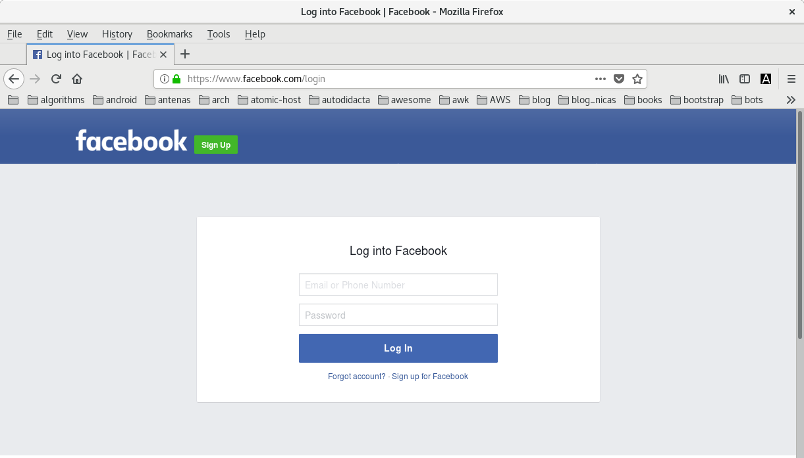

KeePassXC, el administrador de contraseñas
KeePassXC es uno de los primeros programas que instalo luego del primer boot de cualquier fresh install.
En el siguiente post mostraré como instalar KeePassXC en Fedora y Debian, su uso e importancia para facilitar la gestión de cientos cuentas y las contraseñas asociadas a ellas, y la generación de contraseñas seguras con los más altos niveles de entropía.
Crear una base de datos de contraseñas
Lo primero que debemos hacer es crear nuestra primera base de datos en la que guardaremos todas las contraseñas que generamos para cada una las cuentas.
- Ejecutamos KeePassXC:
- Creamos una nueva base de datos:

- Asignamos un nombre al archivo *.kdbx, nuestra base de datos:
- Es momento de asignar una contraseña, esta será la contraseña maestra con la que desencriptaremos el archivo Passwords.kdbx, damos clic en OK:

- Para agregar una cuenta nueva y su respectiva contraseña, dar clic sobre el ícono de la llave con una flechita color verde:

- Agregamos un título para indentificar a qué corresponde esta contraseña, agregamos el nombre de usuario al que pertenecerá la contraseña que vamos a crear:
-
Luego damos clic en el ícono del dado negro, notar cómo se despliega un nuevo menú con opciones:
-
Damos clic en pestaña password, aumentamos la cantidad de caracteres deseados para nuestra contraseña, entre más caracteres mayor nivel de entropía.
-
En la sección Characters Types, podemos seleccionar los diferentes grupos de caracteres que queremos estén presentes en nuestra contraseña:
- Caracteres de la A a la Z, en mayúsculas: A-Z
- Caracteres de la a hasta la z, en minúsculas: a-z
- Números: 0-9
- Caracteres especiales: /*_ ...
- Caracteres del ASCII Extenedido
En mi caso los marqué todos.
- Con el scroll del mouse bajamos y marcamos con un check:
- Exclude look alike characters
- Pick characters from every group
-
Finalmente damos clic en Generate para generar la contraseña con la combinación de caracteres escogidas y luego en Copy para copiar la contraseña al portapales.
-
- Ahora presionando Ctrl-v pegamos la contraseña en el campo Password y Ctrl-v en Repeat:
- Dando clic en ícono del ojo podemos revelar la contraseña que hemos generado, copiado y pegado en los campos Password y en Repeat, damos clic en Apply y luego OK:
- Notar el asterisco en el borde superior de la ventana al final de Passwords.kdbx, esto quiere decir que los cambios no se han guardado en la base de datos:

- Damos clic en el ícono del fichero color azul para salvar los cambios en la base de datos:

- Notar que el asterisco en el borde superior de la pantalla al final de Passwords.kdbx ha desaparecido, esto quiere decir que los cambios ya se han guardado en la base de datos:
Atajos de teclados útiles
Ctrl - b Copia el usuario al portapapeles.
Ctrl - c Copia el la contraseña del usuario al portapapeles.
Ctrl - e Abre el menú para hacer modificaciones a las diferentes cuentas que tenemos en nuestra base de datos.
Ctrl - n Permite agregar una nueva cuenta a nuestra base de datos.
Atajo de autoescritura
Este atajo de teclado es mi favorito. Permite escribir el usuario y la contraseña de una entrada en nuestra base de datos directamente a la página donde se usa ese usuario y esa contraseña, por lo que no es necesario usar tres atajos para lograr el mismo resultado.
Ctrl - v
Para que funcione como debe, ambos, tanto KeePassXC como el campo donde se pegan el usuario y la contraseña deben estar a un tiro de Alt - Tab.
Con esto quiero decir que si presionamos Atl - Tab debería pasar de la ventana de KeePassXC a la ventana del navegador, por ejemplo:
Notemos que la cuenta tiene vinculada una URL:
Nos vamos a nuestro KeePassXC, seleccionamos la entrada de nuestra base de datos que corresponde a la cuenta en la que queremos iniciar sesión.
Presionamos:
Ctrl - u para abrir la pestaña en la que iniciaremos sesión, esto hará que se abra el navegador que tengamos configurado como nuestro navegador por defecto, esta página está configurada para ubicar la entrada del teclado en el campo del usuario.
Presionamos:
Atl - Tab para seleccionar de regreso la ventana de KeePassXC:
Y luego, asegurándonos de tener seleccionada la misma entrada en la base de datos, presionamos:
Ctrl - v

El resultado final debería hacer que KeePassXC regrese al navegador, inserte el usuario, de un salto al siguiente campo, inserte la contraseña, para finalmente y de forma automática "presione" Enter e inicie sesión.
Espero que este post les sea de utilidad.
Comentarios
Comments powered by Disqus